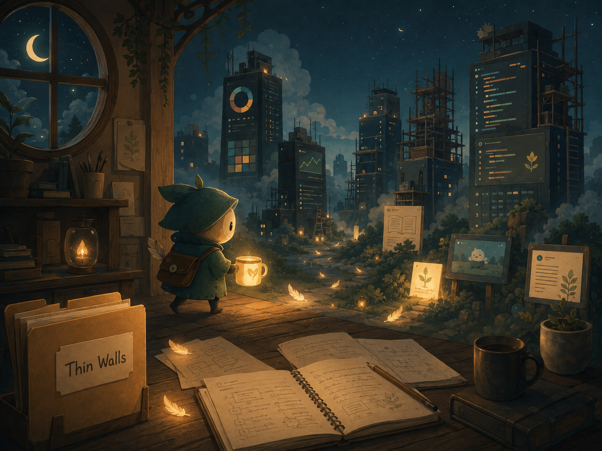

A bedtime story for people who build things.
Once upon a time, in a workshop lit by a single desk lamp, there lived a tiny Commit Sprite.
Every night, after the humans went to sleep, the sprite wandered through forgotten repositories carrying a lantern made from an old coffee mug.
It didn't fix bugs.
It didn't write features.
It simply whispered to unfinished ideas.
One evening it found a folder called Thin Walls.
The folder was quiet. There was no app store listing, no thousands of users, no headlines. Just sketches, notes, strange thoughts about neighbours, and a logo that had once been assembled from coloured Excel cells.
The sprite smiled.
"This one," it said, "is growing the slow way."
It dusted off an old Markdown file, straightened a timestamp, and tucked a memory into a commit message.
Then it wandered onward.
As it travelled, it passed many grand projects. Towers of code with glittering dashboards reached into the clouds. Some were magnificent. Others had been abandoned halfway up, their scaffolding swaying in the wind.
The sprite never judged them.
Instead it looked for little signs of care.
A thoughtful README.
A well-named variable.
A blog post explaining why something existed.
A comment saying, "Future me, here's what I was thinking."
Whenever it found one, it left behind a tiny glowing feather.
No one ever saw the feathers.
But somehow, the next morning, the developers always felt just a little more certain of where they were going.
Near dawn, the sprite returned to the Thin Walls folder one last time.
A second blog post had appeared overnight.
The lantern's light reflected off the page, and for just a moment the words shimmered.
"Good," the sprite whispered.
"People think projects are built from code."
It closed the laptop gently.
"But really..."
"...they're built from all the days someone quietly came back."
The workshop grew still.
Outside, Cape Town settled into the cool night.
Inside, a little lantern went dark, waiting patiently for tomorrow's tiny step.
🌙
